Benoit Lord
- 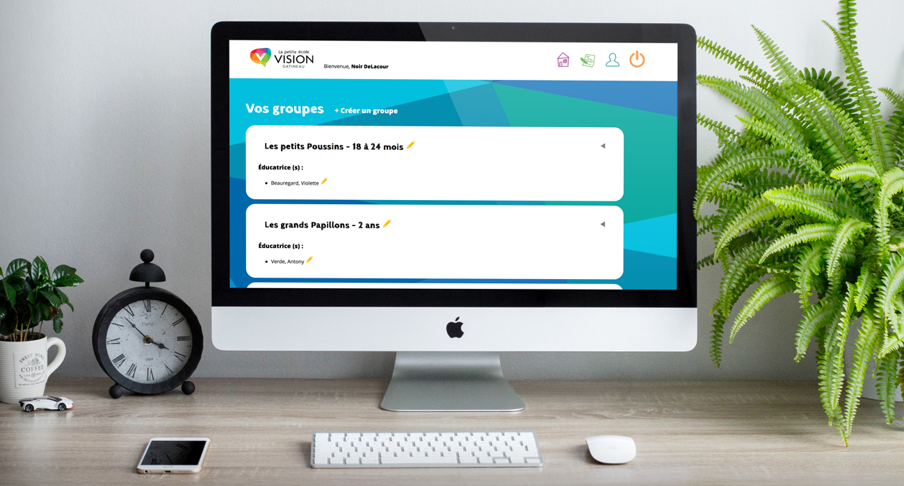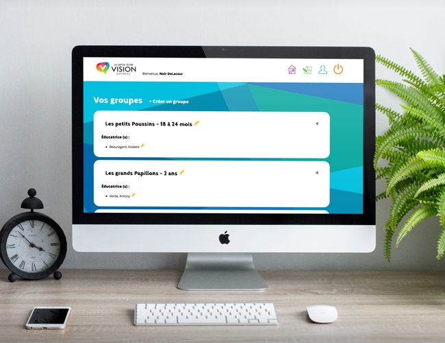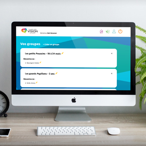
- 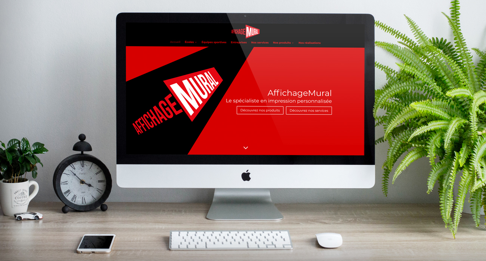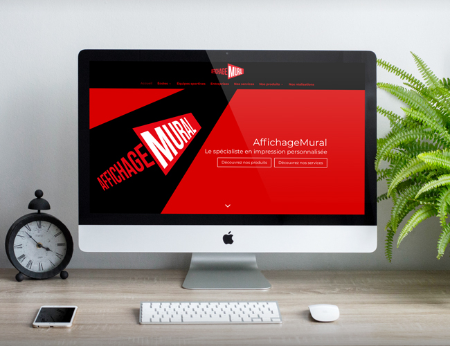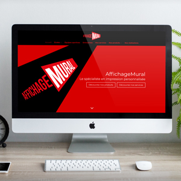
- 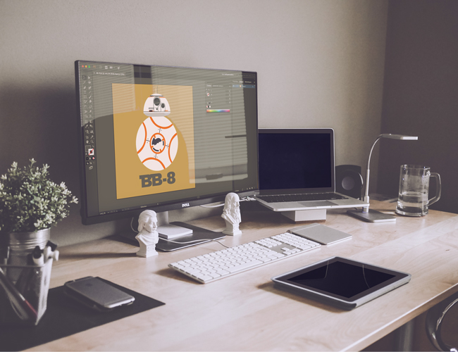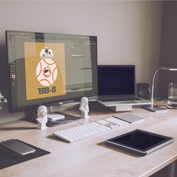
Mon portfolio
Sites web et programmation
Intranet de la garderie Vision
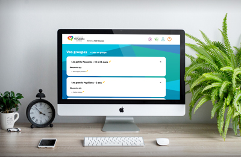J’ai programmé ce site web avec Jean-Michel Dorais et Fabien Thérien-Prud’homme dans le cadre d'un cours pour permettre à la Petite École Vision de Gatineau de gérer leur garderie et de marquer les présences et absences des enfants ainsi que de créer des fiches de résumé de la journée des enfants, le tout en HTML, CSS, JavaScript et PHP.
GuitarBox
J’ai créé cette application pour iOS qui offre différents outils utiles pour un guitariste. Je l'ai créée grâce au langage de programmation Swift et à l’outil Xcode, le tout pour apprendre par moi-même à créer une application pour mobile. Elle est disponible sur l'App Store d'Apple. Téléchargez-là en cliquant sur le lien ci-bas pour m'encourager !
Site web pour Manon Bureau
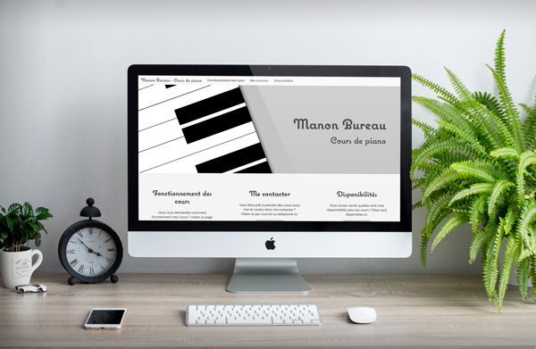Ceci est un site que j’ai programmé à l’aide du framework bootstrap, pour ma mère, qui est professeure de piano. J’ai moi-même créé tout le site et les images qu’il contient. Vous pouvez le visiter à l’adresse suivante :
www.manonbureaupiano.caSite web pour Affichage Mural
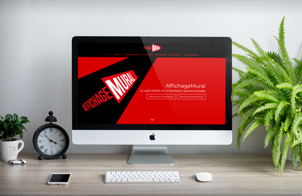Ceci est un site que j’ai créé dans le cadre d'un cours pour la compagnie Affichage Mural à l'aide WordPress et du thème Divi. Durant ce cours j'ai pu compétitionner avec mes collègues de classe pour créer ce qui aurait pu devenir le site officiel de la compagnie. Vous pouvez voir ce site ci-dessous.
affichage.benoit-lord.comIllustrations
Illustrations de Star Wars
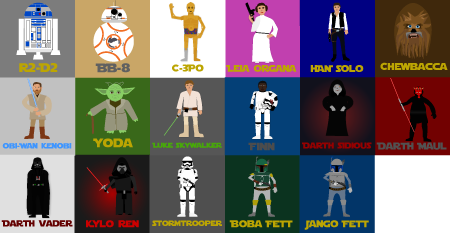 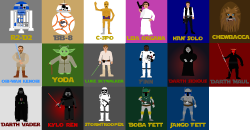Ceci est une collection d'illustrations de la série Star Wars que j'ai réalisée à l'aide d'Adobe Illustrator. Elle comprend la plupart des personnages de la série illustrés de façon « cartoon ».
Animation des Avengers
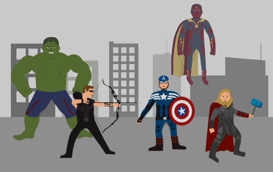Ceci est une animation que j'ai réalisé à partir de mes illustrations des Avengers, un groupe de super héros de l'Univers des comics de Marvel. Je l'ai créée avec Adobe After Effects.
Batman
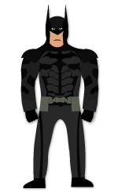Cette illustration représente le célèbre Chevalier Noir, Batman, alter-ego de Bruce Wayne dans les Comics de DC Comics.
Flash
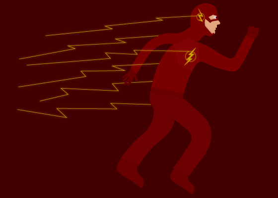 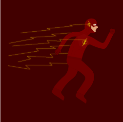Cette illustration, que j'ai réalisée à l'aide d'Adobe Illustrator, représente Flash, un super-héro créé par DC Comics.
Green Arrow
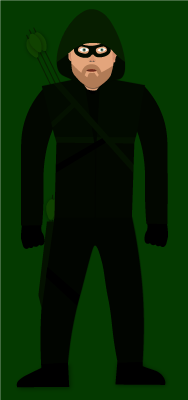Cette illustration représente un autre super-héro de DC Comics, The Green Arrow.
Harry Potter
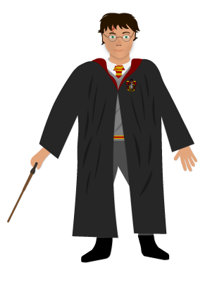 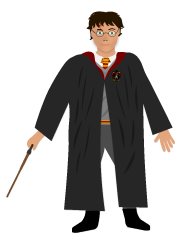Ceci est une illustration de Harry Potter de la série de livre et de films du même nom que j'ai réalisé à l'aide d'Adobe Illustrator.
Ron Weasley
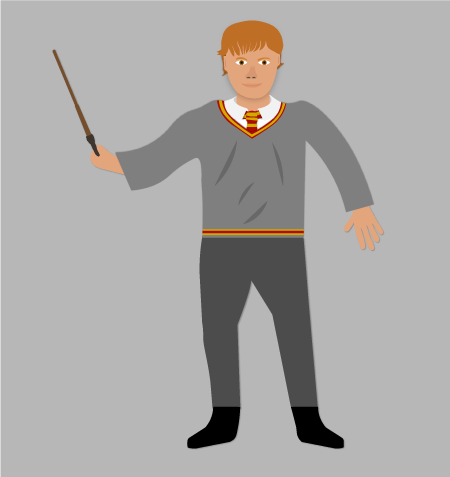 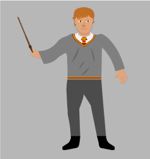Voici une autre de mes illustrations de l'univers magique de J.K. Rowling, celle-ci représentant Ron Weasley, compagnon de Harry Potter dans ses aventures.
Logo de Gryffondor
Ceci est une reproduction de l'emblème la maison Gryffondor dans la série de livre et de films Harry Potter que j'ai réalisé à l'aide d'Adobe Illustrator.
Lord Voldemort
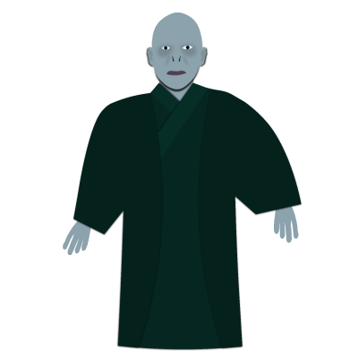 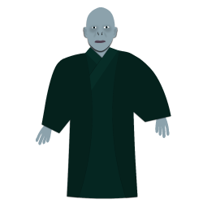Ceci est une illustration du diabolique Lord Voldemort de la série de livre et de films Harry Potter que j'ai réalisé à l'aide d'Adobe Illustrator.
Jacob Frye
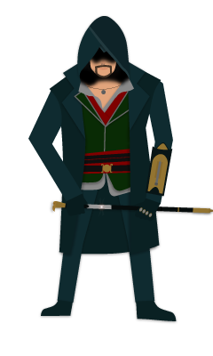 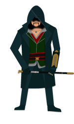Ceci est une illustration que j'ai réalisée à l'aide d'Adobe Illustrator représentant Jacob Frye, un des héros du jeux vidéo Assassin's Creed Syndicate.
Master Chief
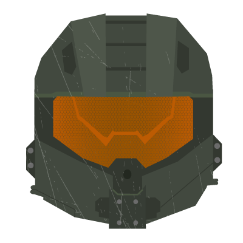 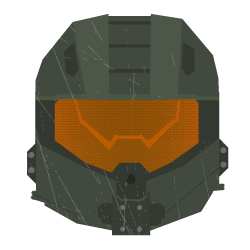
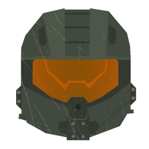
J'ai ici illustré à l'aide d'Adobe Illustrator le casque du spartan John-117 ou le Master Chief, le héro de la série de jeux vidéo Halo.
Super Mario
Ceci est une illustration du célèbre personnage de jeux vidéo de Nintendo Super Mario que j'ai réalisée à l'aide d'Adobe Illustrator.
Autres
Enter Sandman de Metallica
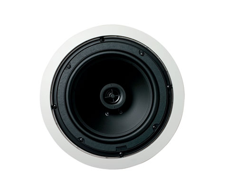 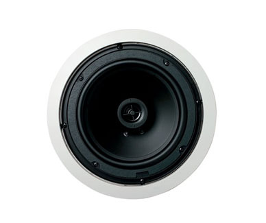 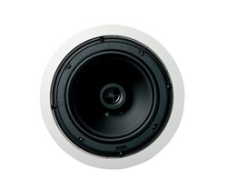Ceci est un enregistrement de la chanson « Enter Sandman » dans lequel vous pouvez m'entendre jouer les sections de guitare, de guitare basse et de batterie. J'ai réalisé ce projet à l'aide du programme Adobe Audition et des divers instruments de musique que je possède.
Zoomorphisme
Ce projet a été réalisé dans le cadre d'un cours à l'aide d'Adobe Photoshop. Il consiste en la fusion d'une image du guitariste Slash et de celle d'un loup.
Générique d'une série télé fictive
Ceci est le générique d'entrée de la série fictive Flash que j'ai réalisée dans le cadre d'un cours. Il est entièrement réalisée dans Adobe After Effects et Adobe Illustrator.
Logo d'une compagnie fictive
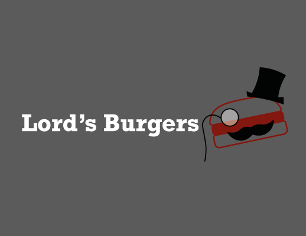J'ai réalisé ce logo pour la compagnie fictive de camion de restauration Lord's Burgers dans le cadre d'un cours à l'aide d'Adobe Illustrator.
Affichages muraux - Techniques d'Intégration Multimédia
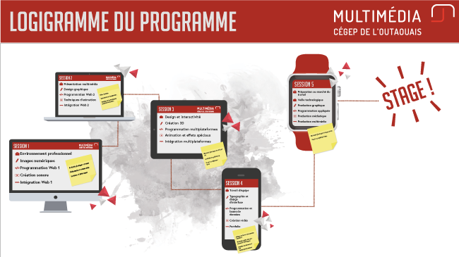 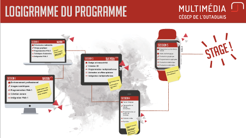 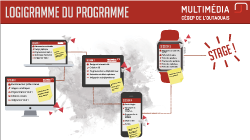Dans le cadre d'un cours, j'ai recréé, avec l'aide des étudiants de mon groupe l'image de marque de notre programme, la Technique d'Intégration Multimédia au Cégep de L'Outaouais. Pour ma part j'ai créé, avec Jade Ménard et Alexandrine Ménard des affichages muraux qui seront placés sur les murs du Cégep, dont voici un exemple.